| Section | What we'll cover |
|---|---|
| 1 · The Development Problem and the State | Why structuralists thought that market discipline kept poor countries poor |
| 2 · Import-Substituting Industrialization | The logic and toolkit of import substitution — and the G77 push to rewrite trade rules |
| 3 · The Political Economy of ISI | Who benefits and loses from ISI? |
| 4 · The Rise and Fall of ISI | Rapid early growth, then twin deficits, rent-seeking, and stagnation |
| 5 · EOI and the East Asian Model | Export discipline, the developmental state, and China's success |
| 6 · The Neoliberal Turn | Debt crisis, the Washington Consensus, and the retreat of the state |
| 7 · Geoeconomic Statecraft | Beijing vs. Washington, strategic resilience |
Trade and Development: ISI, EOI, and the Neoliberal Turn
INTL 503 | Chapters 6 & 7
Professor Sarah Bauerle Danzman
July 14, 2026
Today’s Plan
Today’s Big Question
How should developing countries approach global market integration?
The Development Problem and the State
Mexico, 1985 → Mexico, 1995
Closed → open in a decade
Into the mid-1980s — among the world’s most protected economies: tariffs to 100%, ~1,200 state-owned enterprises, not even in the GATT.
Then, fast — joined GATT (1987) and NAFTA (1994); privatized, deregulated, integrated into world markets.
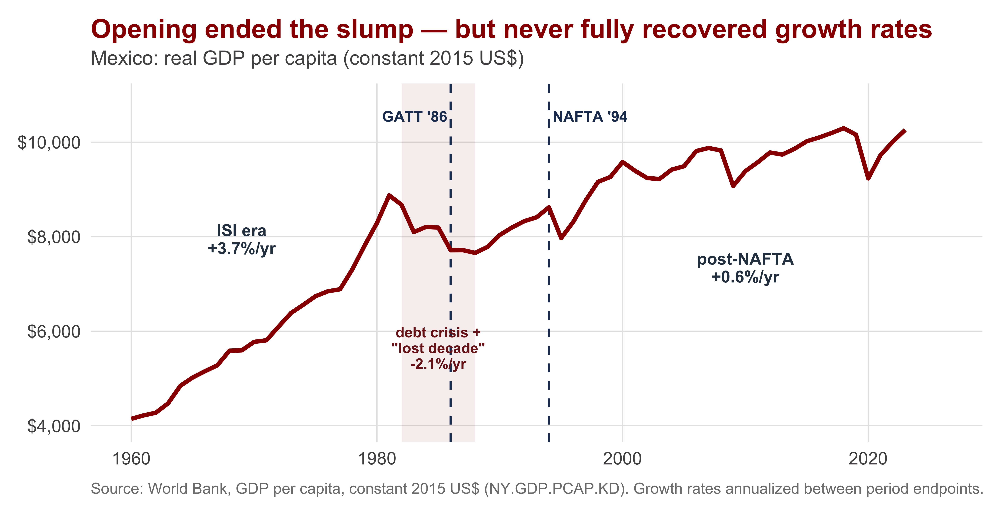
Mexico’s reversal was the rule, not the exception — India, China, most of Latin America and Africa did the same. Why did nearly every poor country first turn away from world markets, then turn back?
The Structuralist Diagnosis: Markets Fail the Poor
The dominant development economics of the 1950s — structuralism — held that markets alone would not industrialize a poor country. Two domestic coordination problems stood in the way:
Complementary demand
(Rosenstein-Rodan) No single factory can sell its output if few others exist to buy it. Investment only pays if many industries start at once — but no firm moves first.
Pecuniary external economies
(Scitovsky) A bigger steel plant lowers input costs for carmakers — who would then expand and buy more steel. But neither invests unless the other does too.
Paul Rosenstein-Rodan · complementary demand
Tibor Scitovsky · pecuniary external economies
The market is stuck in a low-level trap. The structuralist fix: a state-led “big push” — the government plans and coordinates the investments the market cannot. (This is Ch. 5’s market-failure logic, but focused on developing/under-industrialized economies specifically.)
Singer-Prebisch and the Super-Cycle Reality
The Prebisch-Singer hypothesis: the periphery (commodity exporters) faces a steadily declining terms of trade against the core (manufactures) — because as the world grows richer, demand for raw materials lags demand for manufactures (low income-elasticity). The structuralist conclusion: don’t stay a commodity exporter — industrialize. Does the real evidence hold up?
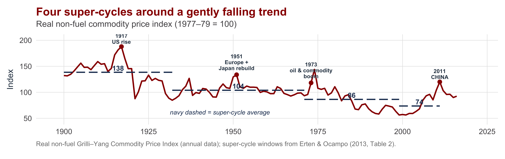
Partly. (1) Super-cycles dominate — four decades-long waves, each riding a rising power’s industrialization (the US, postwar Europe/Japan, the 1970s, and most recently China). (2) A mild Prebisch-Singer drift — each super-cycle’s average (navy) steps below the last. Economists reject a smooth secular decline — but developing-country governments believed in it, and that belief drove the turn to ISI.
Import-Substituting Industrialization
The Logic of ISI: Make It Here Instead
Import substitution industrialization (ISI): industrialize by producing domestically the manufactured goods you used to import. Conceived as a two-stage strategy.
| Stage | Main industries | Orientation |
|---|---|---|
| Commodity Exports (1880–1930) | |Precious metals, oil, coffee, rubber, cotton — primary commodities | |World market |
| Primary / "Easy" ISI (1930–1955) | |Simple consumer goods: textiles, food, cement, apparel, shoes | |Domestic market |
| Secondary ISI (1955–1968) | |Consumer durables + capital goods: autos, machinery, petrochemicals, pharma | |Domestic market |
Easy ISI is “imitation”: large existing demand, mature technology, low-skill labor.
When the domestic market for simple goods is exhausted, governments faced a fork
— export (East Asia) or
— go deeper into ISI (most of the rest).
ISI Requires Protective Tariffs
Secondary ISI grew backward linkages (Hirschman): make cars → demand parts → demand steel, glass, rubber. Governments pushed it with planning, state investment (SOEs + nationalized finance), and, above all, trade barriers with a signature shape — tariff escalation.
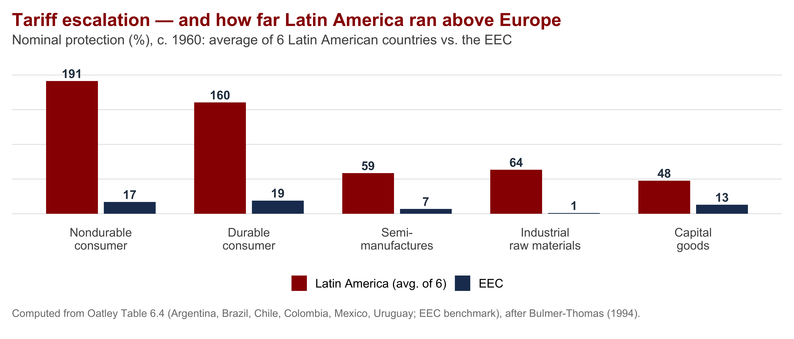
Two things at once: escalation — Latin American tariffs tower over consumer goods (~190% / ~160%) and fall sharply on the inputs and capital goods industry had to import (~48–64%); and scale — every category dwarfs the EEC, which never tops 19%. Wall off the home market; keep imported inputs cheap.
Who Paid for It? Agriculture Did
ISI redistributed income from countryside to city — taxing the export sector to subsidize industry.
- Marketing boards bought crops from farmers below world prices and sold at world prices — the gap was a tax on farmers
- Tariffs raised the price of the manufactures farmers had to buy
- In Ghana, farmers received only ~40% of the free-trade value of their crops; real farm incomes could have risen 2.5× under free trade
ISI was a giant distributional transfer: export-oriented producers lost, import-competing producers won. Thus, ISI was only politically possible when domestic institutions favored urban capital/labor groups and marginalized agricultural interests.
Rapid early payoff: developing economies grew 6–7.6%/yr in the 1960s–70s, led by manufacturing. ISI appeared to work.
ISI and International Trade Architecture
ISI challenged Free Trade ideology that developing countries should specialize in primary production. Because it required high tariffs on final goods, late industrializers sought to shift rules to provide preferences for developing countries (remember this was happening during Cold War).
1960s — UNCTAD & the Group of 77
Through UNCTAD (est. 1964), the G77 pressed three demands:
- Commodity price stabilization — price floors + buffer funds to halt the Singer-Prebisch slide
- Financial transfers to offset declining terms of trade
- Preferential market access — the GSP and GATT Part IV (non-reciprocity)
1970s — the NIEO, and its collapse
The 1973 oil shock showed “commodity power.” Emboldened, the G77 escalated to the New International Economic Order (1974): control over MNCs, cheaper technology, debt relief, more aid, a louder voice in the IMF/World Bank.
It died by the mid-1980s — the G77 fractured, OPEC wouldn’t lend its oil leverage, and the debt crisis drove countries to the IMF/World Bank, flipping power back to the North.
The international winners/losers: redistribute the gains from trade — at home from farm to factory, abroad from North to South. Both collapsed together in the 1980s debt crisis — which sets up the neoliberal turn.
The Political Economy of ISI
Trade Politics Coalition
Trade strategy tracked who held domestic power — and global shocks shifted that.
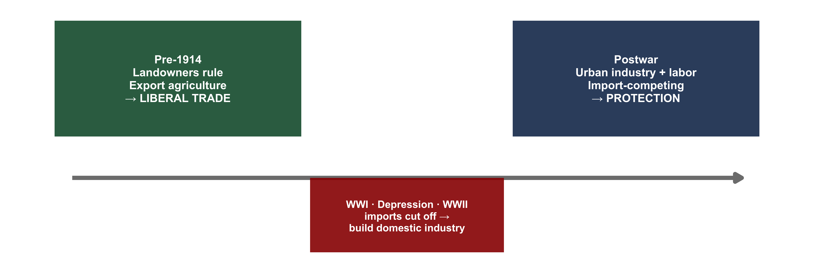
Before WWI, landowners ran “oligarchic democracies” (~5% participation) and chose openness. Global shocks forced domestic manufacturing into being — creating an urban coalition that then demanded permanent protection.
Two Roads to the ISI Coalition
The coalition formed differently across regions — which shaped how durable and how nationalist ISI became.
Peronist poster: Argentina’s Second Five-Year Plan (1952)
| How the coalition forms | Underlying cleavage | |
|---|---|---|
| Latin America | ISI benefits urban labor + industrial capital; hurts landowners. Tied to deep class cleavages in highly unequal societies — Perón (Argentina), Vargas (Brazil) rise on urban + labor support. | Class conflict (urban vs. rural) |
| Former colonies (Asia, Africa) | ISI benefits the indigenous elite taking over the state as colonial powers leave. Tied to a nationalist, anti-colonial orientation — India's autonomous industrialization; land reform shifts power to urban sectors in Korea/Taiwan. | Nationalism (indigenous vs. colonial) |
So Why Didn’t Everyone Just Export?
If East Asian export-led growth worked so well, why did most of the developing world choose ISI instead? Initial conditions and politics.
EOI tended to emerge where:
- Markets were small (forcing an outward orientation)
- Inequality was low; land was not dominated by a large rural elite
- Agriculture was small-scale — no powerful landowning bloc to tax or appease
ISI tended to emerge where:
- Self-sufficiency was politically popular (nationalism, class reform)
- Powerful urban coalitions could capture protection
Initial conditions shaped the political institutions that arose, and in turn, how interests where aggregated.
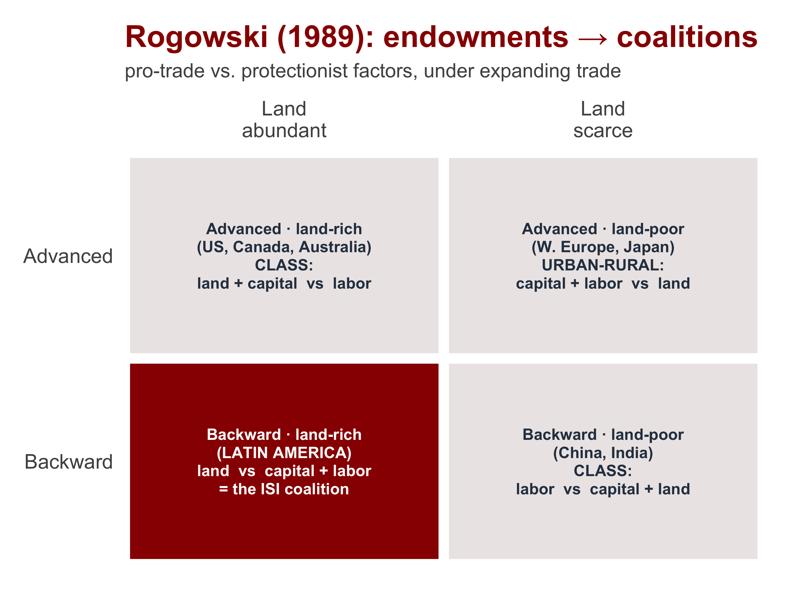
The Rise and Fall of ISI
The Twin Deficits
Budget deficits
- SOEs ran combined operating losses ~4% of GDP; kept alive from the budget
- Urban subsidies (food, fuel, transport) + civil-service padding (Benin’s tripled, 1960–80)
Current-account deficits
- ISI depended on imports (machines, parts) but its industries couldn’t export — small markets, no scale, excess capacity
- Overvalued exchange rates made imports cheap and exports uncompetitive
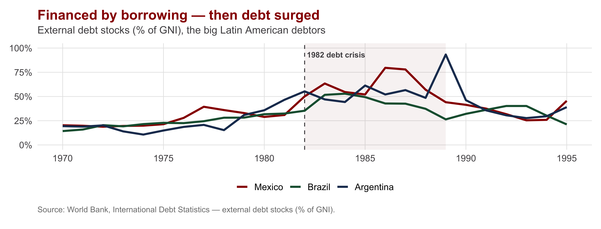
Rent-Seeking and the Politics of No Exit
ISI didn’t just create economic imbalances — it created interests that blocked reform.
- Controls on imports created rents: a license to import was worth a fortune, so firms spent on lobbying, not productivity (Krueger 1974)
- Estimated cost of rent-seeking: ~7% of national income in India, ~15% in Turkey
- Reform threatened urban supporters → blocked. Ghana’s 1971 devaluation triggered a coup within days
Recall objections to mercantalism from Chapter 5: the “temporary” protection never ends, because it creates special interest that lobby for their preservation. The state could pick industries — but it could not let losers go.
EOI and the East Asian Model
The East Asian Exception
While ISI economies stalled, a handful of East Asian economies exported their way up.
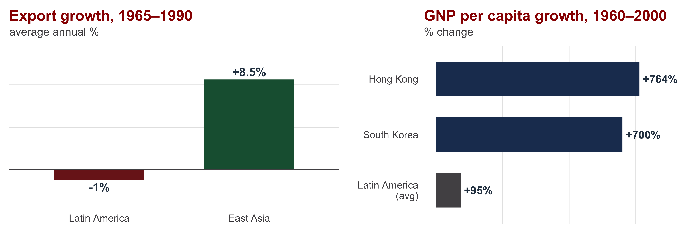
Manufacturing output grew 10.3%/yr in East Asia (1965–90) — no other developing region came close. By 1990, East Asian incomes had passed Latin America’s, sometimes doubling them.
Two Explanations: Market or State?
| Neoliberalism | Statism | |
|---|---|---|
| Who gets credit | The MARKET (IMF / World Bank) | The STATE (Amsden, Wade, Haggard) |
| Core claim | Success came from "getting prices right" and exposing firms to world competition | Success came from well-designed industrial policy that built comparative advantage |
| Trade policy | Export orientation + a stable macro environment; only selective liberalization | Targeted protection of infant industries at each stage; export-processing zones |
| Mechanism | Outward orientation forces efficiency; low inflation → high savings & investment | Credit tied to EXPORT performance; SOEs (POSCO); skill upgrading; staged targeting |
Both arguments are partly right (Haggard).:
Macro + trade policy created a “permissive framework for the realization of comparative advantage”
targeted industrial policy “pushed firms to exploit it.”
= Markets and a capable state.
EOI Is Chapter 5 at Development Scale
The developmental state is strategic-trade theory and infant-industry protection, applied to a whole economy — with one feature that fixed ISI’s fatal flaw.
- Infant-industry protection — but temporary and conditional
- Targeted credit — Korea: loans “without limit” to firms with confirmed export orders; Taiwan: exporters paid 6–12% interest vs. 20–22% for others
- The discipline device: support is tied to world-market performance, so losers get cut
ISI’s weakness: when the state picks winners, it creates expensive market distortions and rewards unproductive firms.
EOI’s answer: the trick is to let losers go — and requiring firms export ensure only productive firms survive.
China: State-Guided Export Growth at Scale
China is the largest empirical test of state-led, export-oriented growth — pursued through gradualism (“growing out of the plan”).
Three pillars of reform
- Household Responsibility System (late 1970s) — market incentives in agriculture
- Enterprise Responsibility System (1984) — firms face market prices and profit
- Open-door policy — Special Economic Zones as “reform laboratories”; FDI + trade; WTO (2002)
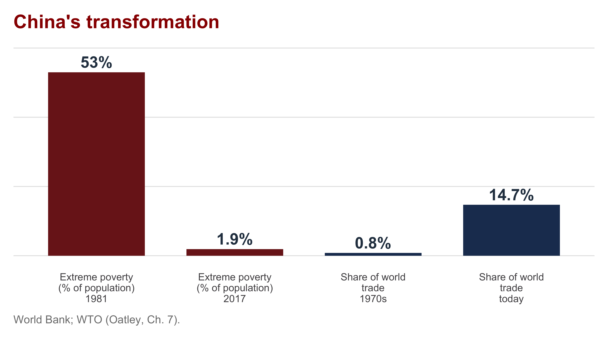
Growth of 6–10%/yr since the 1980s; the world’s largest merchandise exporter. The state never left — it sequenced the market in. Looming challenge: the middle-income trap.
The Neoliberal Turn
The 1980s: Debt Crisis Forces the Issue
ISI’s imbalances became a catastrophe when the bill came due.
- Governments borrowed abroad to cover budget + current-account deficits — often for consumption or projects that earned no export revenue
- 1973–1982 shocks: oil prices ↑, terms of trade ↓, interest rates ↑
- By the early 1980s, many countries could not pay → turned to the IMF and World Bank
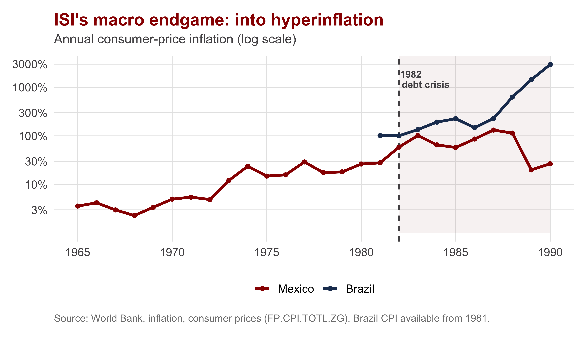
The Washington Consensus
The reforms the IMF and World Bank attached to their loans had a name and a creed: “stabilize, privatize, liberalize.”
STABILIZE
get the macro right
- Fiscal discipline
- Redirect public spending (pro-growth / pro-poor)
- Tax reform
- Competitive exchange rates
PRIVATIZE
roll back the state
- Privatize state-owned enterprises
- Secure property rights
LIBERALIZE
free prices, trade, capital
- Market-determined interest rates
- Trade liberalization
- FDI liberalization
- Deregulation
Coined by John Williamson (1990) for the policies the World Bank, IMF, and U.S. Treasury — all in Washington — agreed on. Delivered through structural-adjustment programs tied to loans. The premise: one model fits all.
Structural Adjustment: Results and Discontents
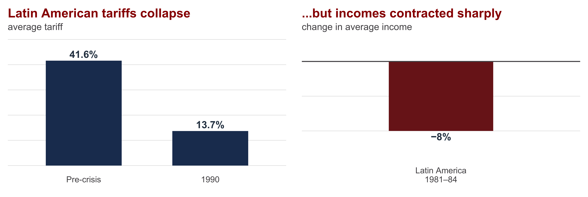
Real liberalization (Latin American tariffs 41.6% → 13.7%; 2,000+ SOEs sold) — but a brutal transition: incomes fell ~8% in Latin America, ~1.2%/yr across 1980s Africa. Stiglitz: the medicine had heavy side effects.
Reconsidering the State
After Prices, Institutions
By the 1990s, “getting prices right” looked necessary but not sufficient. Attention shifted to institutions.
Inclusive institutions (Acemoglu & Robinson) Broad political participation, rule of law, secure property rights → individual initiative → sustained growth
Extractive institutions Power held by a narrow elite, weak property rights, rent-seeking → growth stalls
North vs. South Korea: same culture and history, opposite institutions, opposite outcomes.
But two cautions —
reverse causality (growth may cause good institutions) and
endogeneity (where do institutions come from?).
Washington Consensus → Beijing Consensus?
China’s success — and the Washington Consensus’s mixed record — revived a recurring question.
| Washington Consensus | Beijing Consensus | |
|---|---|---|
| Premise | One universal model delivers growth | Particularity — each country finds its own path |
| Role of the state | Withdraw: "stabilize, privatize, liberalize" | Lead: state-guided, export-oriented development |
| Sovereignty | Conditionality from Western institutions | No loss of sovereignty to the West |
| Method | Apply the blueprint | Experiment boldly; "grow out of the plan" |
The “Beijing Consensus” emphasizes particularity against the Washington model’s universality.
It appeals to governments in developing countries because it promises rapid growth without requiring governments ceding sovereignty by imposing market discipline and
It provides governments a rationale expanding the coercive power of the state.
Critics ask: why would state-led work now when it failed under ISI? AND Does statism merely support authoritarianism?
Contemporary Statism as “Strategic Resilience”
The state-led idea is back — now justified by security, not growth.
In our podcast, India’s Chief Economic Adviser V. Anantha Nageswaran openly reverses his earlier opposition to import substitution — reframing it as “strategic resilience”:
- Globalization’s cycle (≈1980–2015) gave way to weaponized supply chains (“in a crisis, there are no free marketeers”)
- Indigenize selectively — not anti-export, but choose where dependence is dangerous
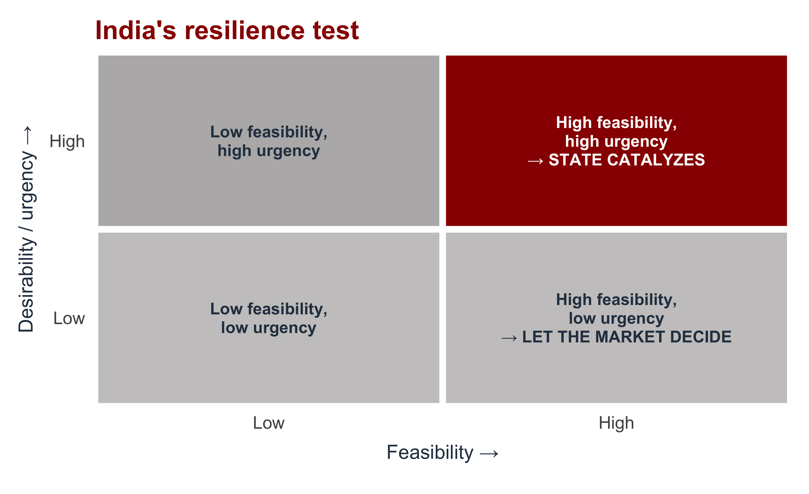
The rationale for state intervention has shifted from competitiveness to security.
Is “strategic resilience” a smarter, disciplined ISI, or the old picking-winners trap wearing a national-security badge?
Recap: The Pendulum of Development
Today’s Big Question — How should developing countries approach global market integration?
The turn inward (Ch. 6)
- Structuralism: markets won’t industrialize a poor country — coordination traps + the Singer-Prebisch slide ⇒ a state-led big push
- ISI: substitute imports behind tariff escalation, SOEs, and five-year plans — financed by taxing agriculture
- A durable coalition (urban labor + capital; or nationalist elites) sustained it; the NIEO tried to rewrite the global rules
The turn back out (Ch. 7)
- Twin deficits + rent-seeking ⇒ no exit ⇒ the 1982 debt crisis and hyperinflation
- East Asia & China: export discipline fixed ISI’s fatal flaw — Chapter 5’s state-centered logic, done right
- The Washington Consensus dismantled ISI; today the pendulum swings back as “strategic resilience”
The real question was never state vs. market — it’s whether a state can pick winners and let losers go.

INTL 503 | Trade and Development: ISI, EOI, and the Neoliberal Turn